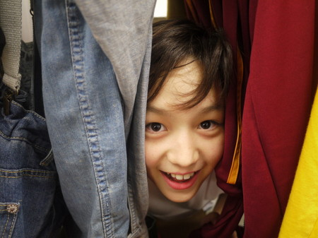

【空にお魚が！！】岡田結実
こないだ空をみてたら、くもの形が！食べられたお魚のほねの形してたの！
写メとった！すごくにてたんだよ！！
その近くとかにネコがいればいいのに ww
一生に一度しかみれないと思う！
キセキだーーーーーーーーーーーーーー！

※写真が見つからないそうなので絵で描いてもらいました
次に書くのは・・・
その人は、自分からみて、かわいくてイタズラ大好きで！あまえんぼう？！
とにかくかわいい それは…ソーズビー航洋（ずっさん）だよ！

ずっさんよろしく！
投稿者:岡田結実 | 投稿時間:18時00分 | カテゴリ：We are 大天才テレビジョン | 固定リンク


 " title="ソーシャルブックマークについて">
" title="ソーシャルブックマークについて">
※NHKサイトを離れます。